SCINTILLA · HUB · THE COMPANY FRONT25 SEP 2026 · BRANCH candidate/hub-company-front-20260925 · NOT DEPLOYED
WHAT CHANGED
Tap a company on the board and it now opens on its chart, not on GEIGER. The chart is the Station's own chart, with a row of timeframes above it (1h 4h 1D 3D 1W) that the Hub remembers for you. EXPAND hides the board and gives the company the whole width. The board has a REVENUE column. A new FUNDAMENTALS tab sits after CHART. Your list is now LIKED, and two smaller lists sit beside it, FAVORITES and RADAR, that you fill from any row or from the company itself.
Nothing here is live yet. It is a branch for the coordinator to look at, merge and deploy. Every picture below was taken in a real browser on this Mac, reading the real data. The browser ran hidden, not on your screen.
PART ONE · A COMPANY OPENS ON ITS CHART
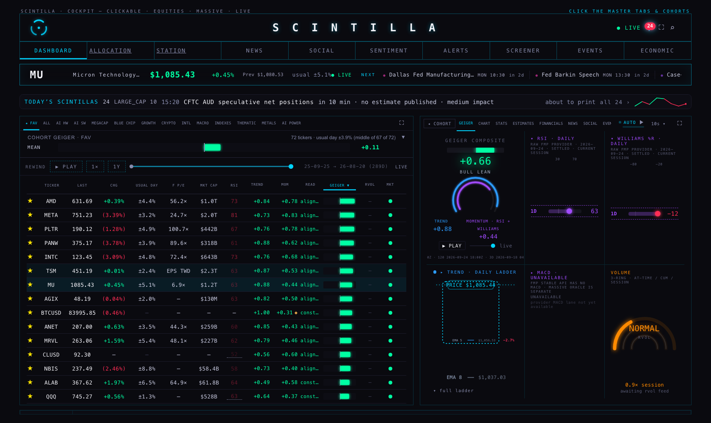
Today (live site code). Tapping MU opens GEIGER.
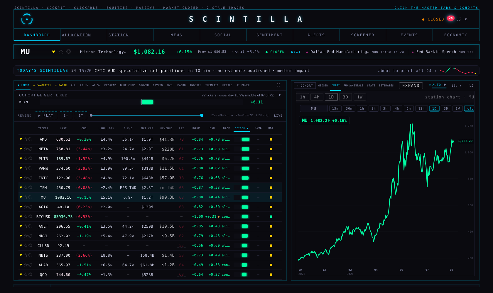
This branch. Tapping MU opens CHART: the Station's chart of MU on daily bars, the Hub's timeframe row above it, and ♥ ☆ ◎ beside the ticker at the top.
The timeframe row changes only the chart, never the rest of the page. Your choice is remembered in this browser (tested: after 4h, the chart asked the Station for range=4h and the browser kept 4h). A new browser starts on 1D.
GEIGER is still a tab. It is just never the one a company opens on.
The Station's RSI lines (the HF-4 job) are one switch in the code, turned off until the Station ships them.
PART TWO · EXPAND
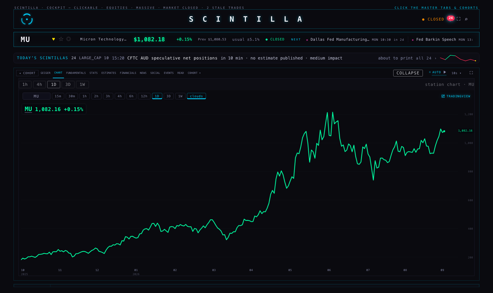
EXPAND (top right of the company, where the Station has its DETAIL badge). The board is gone, and the chart and all the company's tabs take the full width: the panel measured 1,587 px wide against 1,680. The same control now reads COLLAPSE and brings the board back (tested). The browser remembers which way you left it. With no company open, the board is never hidden.
PART THREE · REVENUE ON THE BOARD
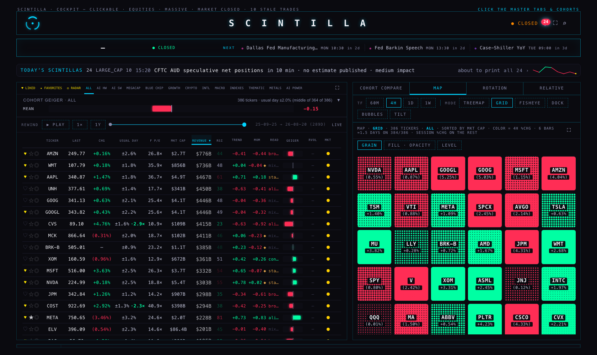
ALL, sorted by REVENUE. Largest first: Amazon $776B, Walmart $736B, Apple $467B, UnitedHealth $450B, Alphabet $446B, CVS $415B, McKesson $411B. Tap the header again and it flips. A name with no revenue on file has a blank cell, never $0.
FOREIGN REVENUE IS NOT SHOWN AS DOLLARSThe stored revenue is in each company's own reporting currency. TSMC's is 4.45 trillion Taiwan dollars: printed as dollars it would have topped the board at "$4.5T", ahead of Amazon (my first version did exactly that). The eleven companies the Hub already knows report in another currency (TSMC, Alibaba, Baidu, JD, Li Auto, NIO, EHang, PDD, ASML, Spotify, Cameco) now read in TWD, in CNY and so on, in the column's grey. They are not ranked against dollar revenues, and the exact figure is in the cell's hover text. This is the same rule the board's F P/E column already follows. Nothing is converted, because the store holds no dated exchange rate.
PART FOUR · THE FUNDAMENTALS TAB
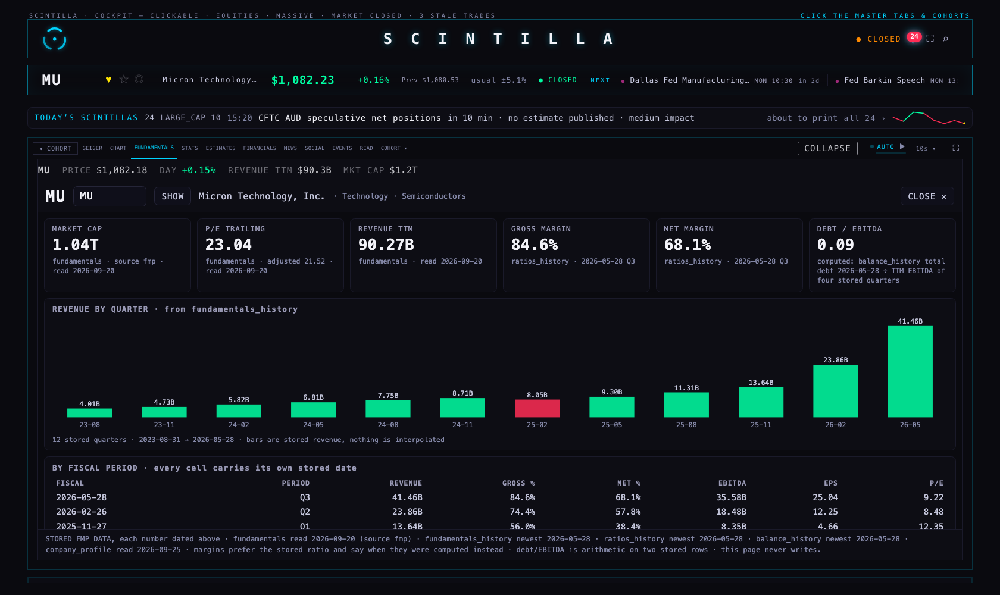
FUNDAMENTALS, right after CHART. The top line is the Hub's own numbers for MU (price, today's change, revenue, market cap), so the tab is never empty while the Station's view loads. Below it is the Station's fundamentals view: market cap, P/E, revenue, margins, debt/EBITDA, revenue by quarter, and every period with its date.
What the Station's view lacks against your TradingView template (SC LAB · 05): the revenue and margin lines drawn on the price chart at two-week bars, the 100-day level, the unified clouds, and earnings, dividend and split markers. Those belong in the Station's fundamentals view, as a Station job. They were not built here.
PART FIVE · LIKED · FAVORITES · RADAR
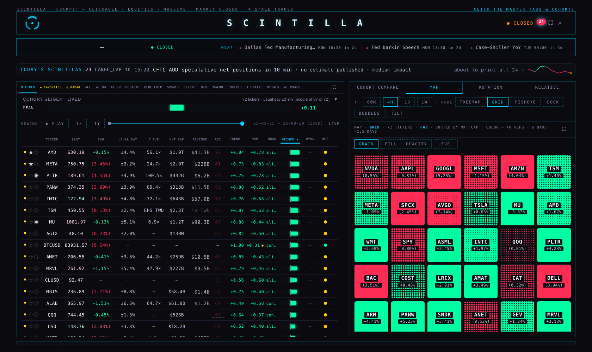
♥ LIKED: your 72 names, the list that used to be FAV, unchanged. Every row has ♥ ★ ◎. Here AMD and META are starred and PLTR and MU are on radar.
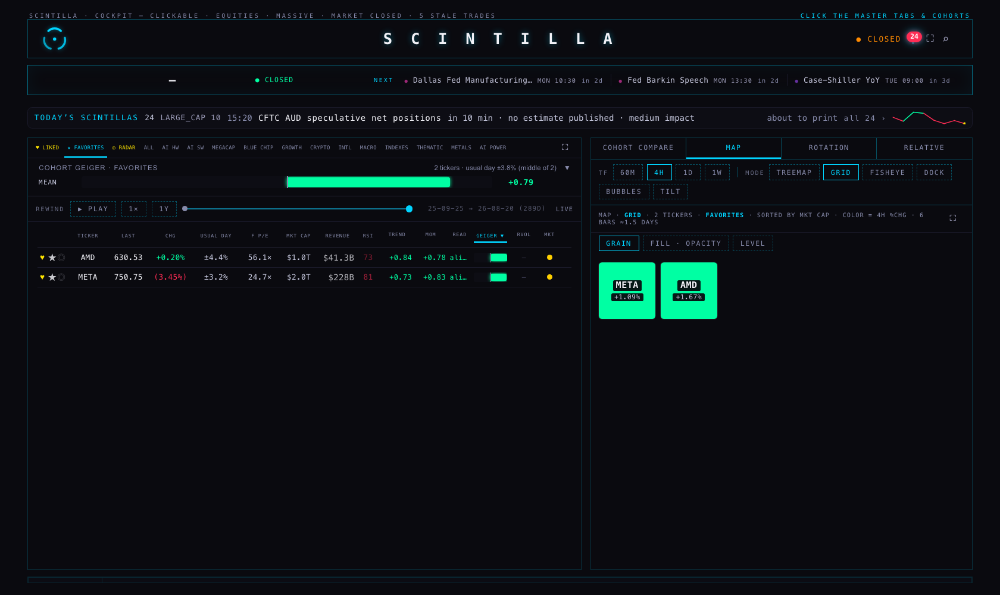
★ FAVORITES: only the names you starred (AMD, META).
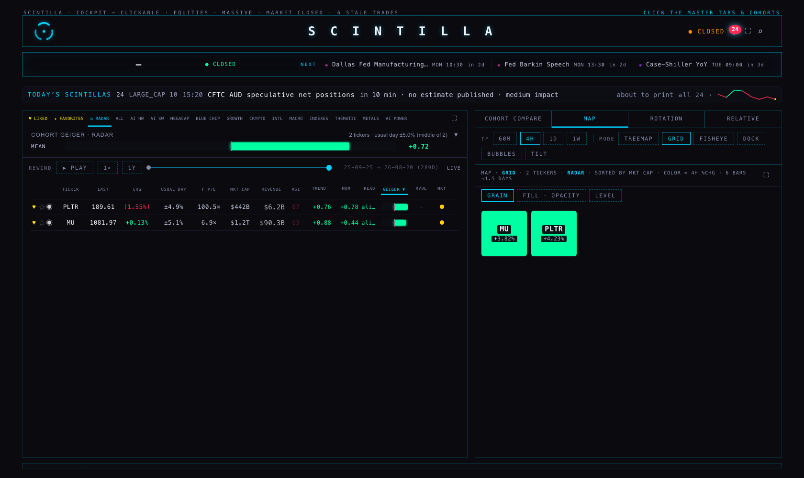
◎ RADAR: MU, starred from its own company view, and PLTR, from its row.
A favorite or radar name is always a liked one. Starring or radaring a name you had not liked likes it too. Unliking a name takes it off both.
Every device sees the same lists. They are stored in one table (station_lists), read when the Hub opens and every 5 minutes, and written the moment you tap.
Nothing is overwritten by accident. A tap does not send "my whole list". It sends "put MU on" or "take MU off", applied to whatever is stored at that moment. So a name another device added, or one the Station's SAVE AS RADAR saved, stays put. Order is the order you added them, and taking one off closes the gap.
The table was still empty when I finished (you have not used it yet). The FAVORITES and RADAR pictures were made with a copy of the table held inside the test browser. Nothing was written to your real lists or likes. Every write the page tried was caught in that browser, and I checked each one.
AT PHONE WIDTH (390)
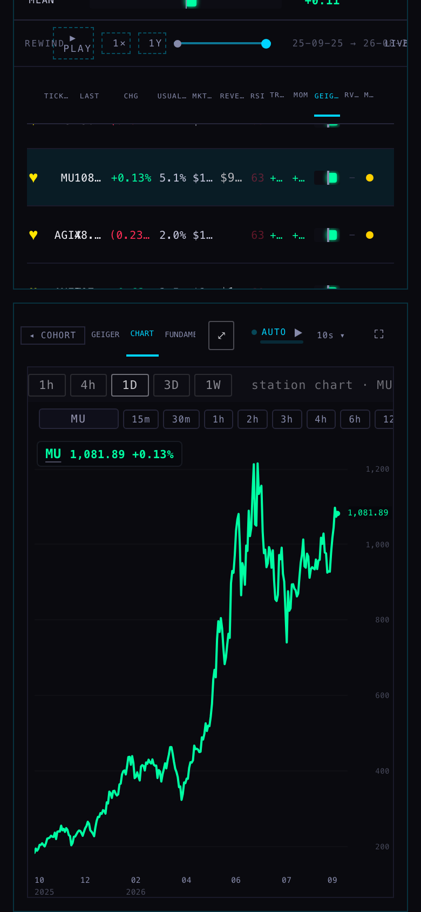
A company opened from the board: the chart, with ♥ ☆ ◎ beside the ticker.
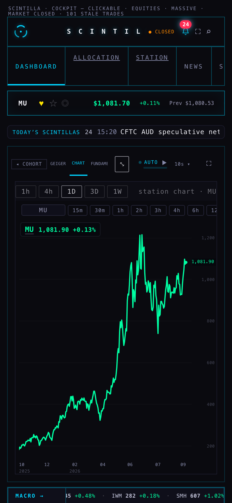
Expanded: the board is hidden and the chart is taller. EXPAND is drawn as a small ⤢ here, so the tabs keep their room.
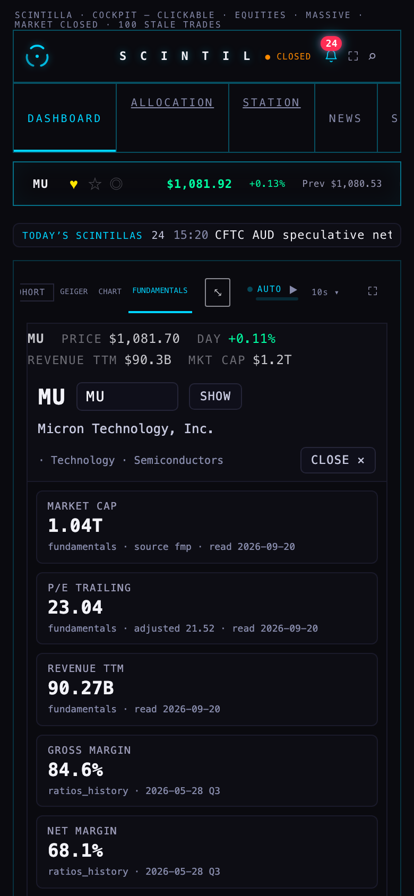
FUNDAMENTALS: the Hub's line wraps to two rows, and the Station's cards are readable.
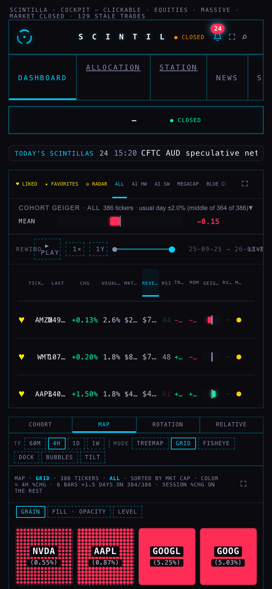
REVENUE sorted: the order is right, but the numbers are cut to "$7…", like MKT CAP. The phone board was already too narrow for its numbers before this change (see "what could be wrong").
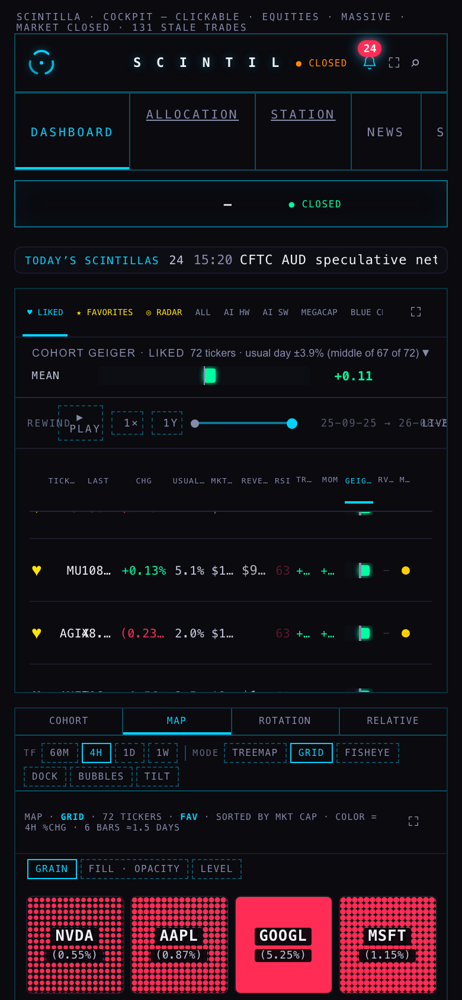
LIKED. On a phone a row shows only ♥ (a phone cell cannot hold three buttons); ★ and ◎ are on the company view.
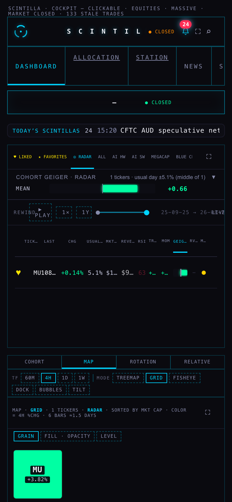
RADAR, filled from the company view.
WHERE EVERY NEW NUMBER COMES FROM
ON SCREEN
SOURCE
NOTES
REVENUE (board)
fundamentals.revenue_ttm, the same row the board already reads for EPS (one read, two more columns)
Trailing twelve months, stored by the FMP fundamentals job. 316 of 366 names have one, all stored within the last 100 days. The hover text shows the stored date. Four names store exactly 0 (LAC, EVTL, QS, SLV) and show blank, with that reason in the hover text.
FUNDAMENTALS line
The board's own row: live quote (price, change), fundamentals.revenue_ttm, company_profile.market_cap
No new read. A name the board does not hold shows "—" in all four.
CHART tab
The Station's chart pane, station.scintillahub.ai/chart/?t=…&range=…&clouds=1
Bars and quotes from the chart API. The Hub adds nothing to them.
FUNDAMENTALS tab
The Station's fundamentals view, station-shells/fundamentals-v1/?t=…
Each of its cards names its own table and date.
♥ LIKED
hub_favorites (unchanged, 72 names)
The same list and the same button as the old star. Only the drawing changed.
★ FAVORITES · ◎ RADAR
station_lists, lists favorites and radar
The same table and shape the Station's SCRATCH will use.
WHAT COULD BE WRONG
Two market caps. For MU, the Hub's line says $1.2T (company_profile, today's) and the Station's view says 1.04T (fundamentals, read 20 Sep). Both are stored numbers, from two writers on two dates. This existed before; the new tab just puts them side by side.
Two timeframe rows on the chart. The Station's chart pane shows its own row (15m…1W) under the Hub's. Clicking the Station's row changes the chart, but the Hub's row does not follow. The Station has a "pane" mode that hides its row, but inside the Hub that mode would also stop the chart's own 10-second price refresh (it expects the Station's desk to push prices, which the Hub cannot). So I left it off. See decision 1.
A name the Station saves to RADAR that you had not liked still shows on the RADAR tab. The Hub does not like it on its own. See decision 2.
Two devices tapping in the same second can still lose one tap: a write is "store the list, then trim the end", not a single database step. It is far less likely than overwriting the whole list, but not impossible.
The phone board was already too narrow before this change. On the live code at 390, "MU" runs into its price and MKT CAP reads "$1.…". REVENUE is cut the same way there. The phone ticker bar already printed LIVE on top of "usual ±5.1%"; with ♥ ☆ ◎ added, those two now sit just past the right edge instead.
"FAV" still appears in other rooms. The NEWS and EVENTS scope labels, the MAP heading and the earnings band's "★ one of your favourites" still mean LIKED. The board's own tab and heading say LIKED. I left the other rooms as they are, as the rules say.
The ALL tab's MAP asks for 4-hour bars of symbols the provider does not carry (crypto, futures, rates) and gets 12 "not found" answers. This happens on today's code too and has nothing to do with this change.
WHAT I DID NOT DO
No push, no deploy, no database change (station_lists already existed), and no write to your real lists or likes.
HF-4 (the RSI lines, which wait for the Station) and HF-6 (the GEIGER proposal, a design job) were not built. The Indicator Lab is byte-identical.
No other room was changed, and the Station was not touched.
DECISIONS FOR YOU
#
QUESTION
MY RECOMMENDATION
1
Hide the Station chart's own timeframe row inside the Hub?
Yes, as part of the HF-4 Station job: let the Station's pane mode keep its own price refresh when the page around it is not the Station desk. The Hub then adds one word to the chart address.
2
When the Station's SAVE AS RADAR saves a name you have not liked, should it like it?
Yes, at the moment of saving (a P1 Station change), so "a radar name is always a liked one" holds everywhere, not just in the Hub.
3
Which market cap should the Hub and the Station both show?
The board's (company_profile, stored today), so the two never disagree on one screen.
PROOF
Tests: 840 run, 833 pass, 5 fail. The 5 are the same ones that fail on the live code today (Indicator Lab checkpoint, one age wording, readiness, review-chart links, xfeed-publish). Before this change it was 820 / 813 / 5.
20 new tests cover: landing on CHART, the timeframe row writing only the chart's address, EXPAND/COLLAPSE, REVENUE formatting, blank and foreign revenue, numeric sorting, the FUNDAMENTALS line, list order and gap-closing, "put on / take off" applied to what is stored, liking with a subset, and the scope rules. The new test file cannot even load on today's code. One test checks that every new name exists only once in the page: the first draft reused a name the EVENTS room already had, and only the real browser showed it.
Six existing test files were updated only where the board truly changed (15 columns instead of 14; READ is now the 12th cell on phones; the list tabs join FAV in the scope rules). No existing check was loosened.
Screenshots: a hidden (headless) browser opened a local copy of this branch, reading the real Supabase and the Station live. Two adjustments: the chart API only answers scintillahub.ai, so its answers were passed through to the local page (read-only); and every write the page tried was answered inside that browser and never sent. No browser of mine is left running.